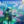

 ASTRONEER
Details
 |
|
| Playtime | Not Played |
| Last Activity | Never |
| Added | 10/29/2021 1:31:49 |
| Modified | Never |
| Completion Status | Not Played |
| Library | Xbox |
| Source | Xbox Game Pass |
| Platform | PC (Windows) |
| Release Date | 2/6/2019 |
| Community Score | |
| Critic Score | |
| User Score | |
| Genre | |
| Developer | System Era Softworks |
| Publisher | System Era Softworks |
| Feature | |
| Links | |
| Tag | Game Pass |
Description
Explore and reshape distant worlds! Astroneer is set during the 25th century Intergalactic Age of Discovery, where Astroneers explore the frontiers of outer space, risking their lives in harsh environments to unearth rare discoveries and unlock the mysteries of the universe.
On this adventure, players can work together to build custom bases above or below ground, create vehicles to explore a vast solar system, and use terrain to create anything they can imagine. A player’s creativity and ingenuity are the key to seeking out and thriving while on exciting planetary adventures! In Astroneer you can:
•Reshape the ground under your feet as though it were made of clay.
•Survive on and explore carefully crafted planets that can be entirely deformed and traversed.
•Snap together components and objects to build bases and vehicles.
•Play with friends in 4 player online drop-in/drop-out co-op.
•Discover and uncover the mysteries of the solar system
•••Deform & shape everything around you•••
In Astroneer, players use their deform tool to dig, collect, shape and build anything they wish. Use this ability to dig to the center of the planet, build a ramp into the sky, or make megaliths just by using terrain!
•••Explore an entire solar system•••
Our vast solar system includes 7 wondrous planets that players can travel between and explore every inch of, from the entire spherical surface, through treacherous layers of caves, all the way down to mysterious the core. Each of those planets has unique and challenging surface and cave biomes that offer a multitude of challenges for players on their journey.
•••Customize & build on the fly•••
Items that Astroneers craft and find in the world can be snapped and connected together to create unique creations for any situation. Customize and decorate your bases, vehicles, and Astroneer.
•••4 Player co-op•••
Astroneer is better with friends. Group up with other players and work together to create massive industrial bases or to create fun games in the extensive creative sandbox.
•••Survive & harness the power of the planets•••
Once Astroneers are ready, they may choose to attempt to understand and possibly harness the power behind mysterious structures found in the world.
Astroneer began as a Game Preview title and would not be here today if not for your support, feedback, and ideas throughout that process. Now that we have hit 1.0 we will keep our pledge to continue building on the foundation that is Astroneer with free, ongoing content updates. If you're curious about the direction we're aiming for, be sure to go check out our roadmap, and our development vlogs to keep updated on what we are working on!